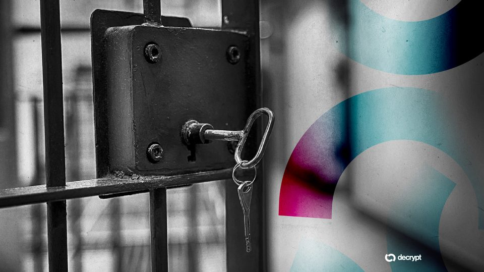
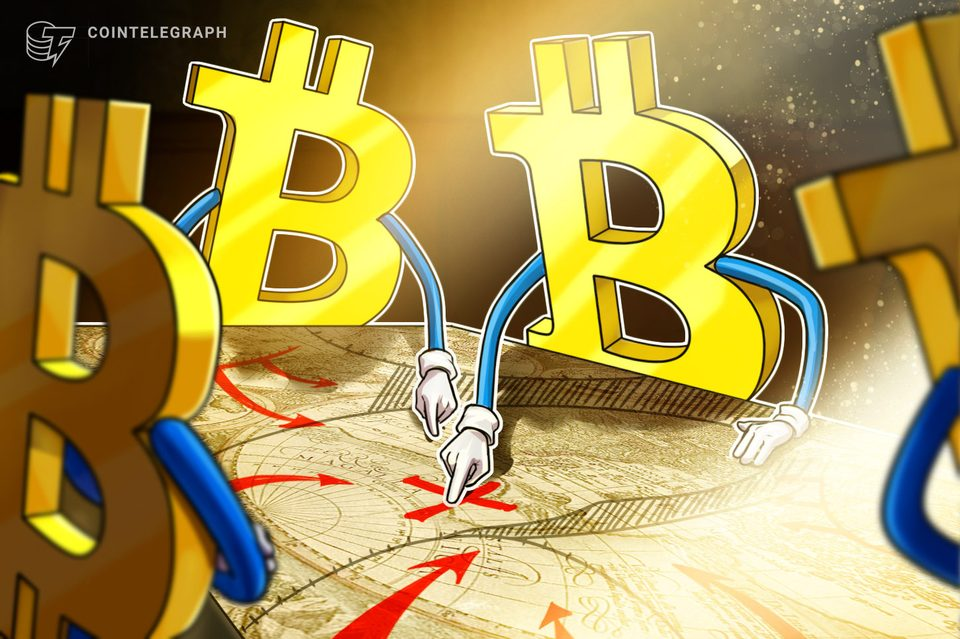
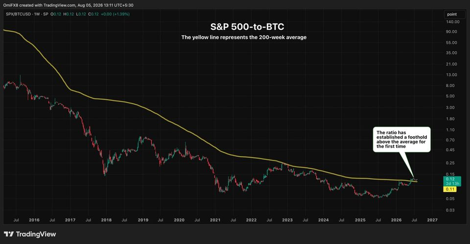
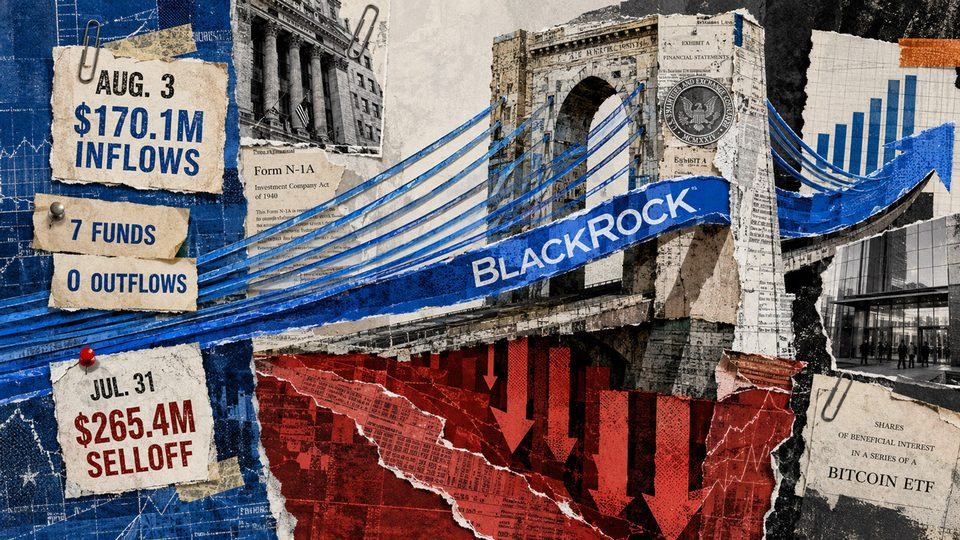
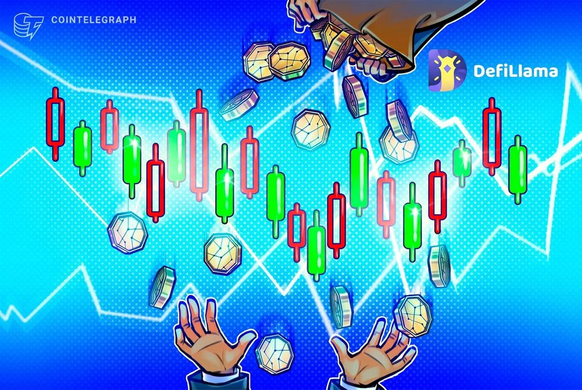
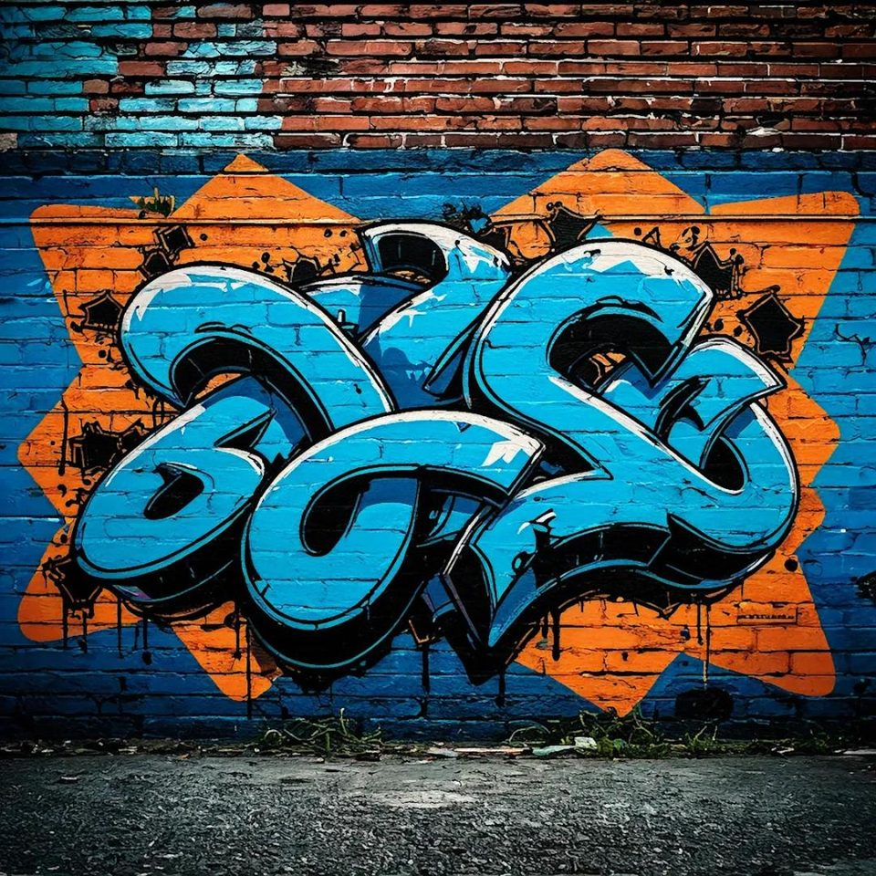

August 5, 2026
Daily headline set with source diversity, cleaned links, and local static rendering.

Ex-LAPD Officer Gets Life Plus 15 Years Over $350K Bitcoin Robbery
Eric Halem and his crew wore police vests to enter a Koreatown high-rise, then handcuffed a 17-year-old and took his hard drive.
Coldcard's $130 million crisis is pushing Bitcoin back into Wall Street's hands
The Coldcard hardware wallet exploit has resulted in the theft of at least 1,596 BTC from about 7,300 addresses as users continue moving funds from potentially vulnerable wallets. Galaxy Research said the confirmed...

Bitcoin price-metric basket sees longest capitulation since FTX blow-up: Glassnode
Glassnode confirmed that its aggregate BTC price cycle tool was in its coldest phase since the collapse of FTX in late 2022.

The worst chart for bitcoin bulls right now
The worst chart for bitcoin bulls right now

This Bitcoin Bridge Shut Itself Down Because AI Was Finding Bugs Too Fast
Non-custodial Bitcoin swap provider Boltz says attackers are finding vulnerabilities faster than its team can fix them, forcing it to suspend swaps indefinitely.

After suffering a brutal $265 million mass exit, seven different Bitcoin ETFs simultaneously roar back to life
Seven funds took in cash with none negative, yet IBIT still supplied 65.5% of the Aug. 3 total. The post After suffering a brutal $265 million mass exit, seven different Bitcoin ETFs simultaneously roar back to life...
Proof of Play to shut down after blockchain gaming thesis falls short
The a16z-backed studio will open-source Pirate Nation assets, while an independent foundation continues supporting the PIRATE token.

New Ethereum proposal would cut issuance to zero if staked ETH reaches $112 billion
New Ethereum proposal would cut issuance to zero if staked ETH reaches $112 billion

AI Enthusiast Bugs His Toddler's Sleepover and Feeds It to Claude—The Internet Bugs Back
Nicholas Charriere turned an hour of nonsense into a family website with named tracks. One reply calling him creepy got more likes than his post.
The crypto project trying to replace the US banking system just pulled its 10 trillion token filing
Its Aug. 3 move stopped this Form 10 before effectiveness, leaving the maximum authorized 10 trillion Locke tokens unissued. The post The crypto project trying to replace the US banking system just pulled its 10...

Forgd brings its crypto market-maker leaderboard to DefiLlama
Forgd’s ratings draw on data from more than 500 token projects and 35 market-making firms, but do not solely reflect trading performance.

"You stole, please return some." Coldcard hacker's wallet becomes a graffiti wall of pleas and hustles
"You stole, please return some." Coldcard hacker's wallet becomes a graffiti wall of pleas and hustles